Documentation produit — discipline de trading en temps réel pour NinjaTrader 8 (Windows).
Logiciel local + addon NT · règles · blocage · zones · licence
Sommaire
Produit
Un garde-fou local : vos règles de discipline deviennent des contraintes techniques pendant le trading.
Architecture
UI Safeguard : plateforme, capital, usage hours, plan de règles, engage discipline, licence. Serveur local HTTP.
Fenêtre Discipline : Connected, OK / BLOCKED, compteurs, Sync zones, Blocking on.
Webhooks / heartbeat sur 127.0.0.1:8080. Secret partagé. Sans Safeguard ouvert = pas de garde-fou.
Installation
Ferme NT → installe les sources addon → rouvre NT → Compile (F5).
Démarre le serveur local + UI. Le serveur reste actif même si l’UI est fermée (STOP.bat pour arrêter).
Fenêtre Discipline → Connected → activer licence PAYC → Engage discipline.
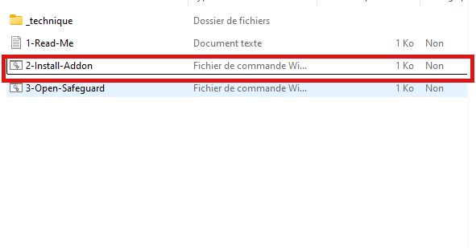
Logiciel Windows
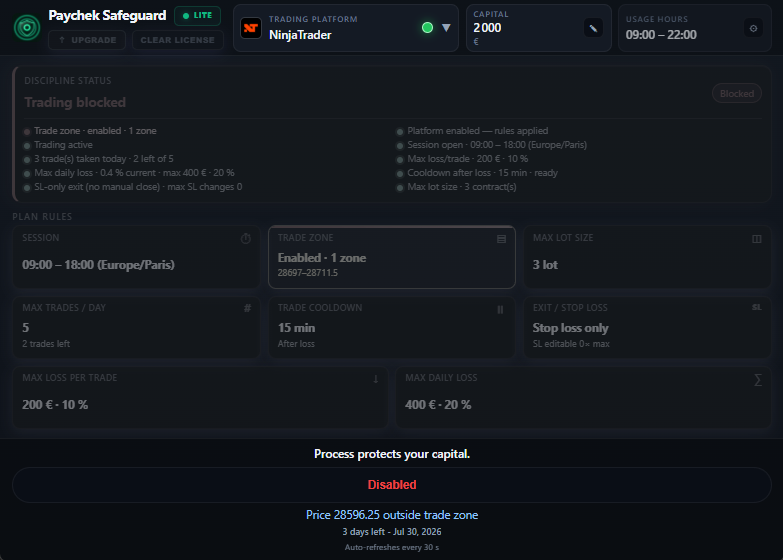
Addon NinjaTrader
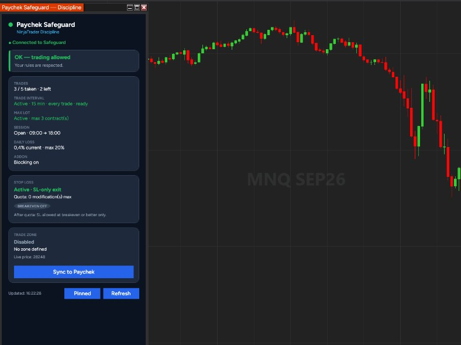
Discipline
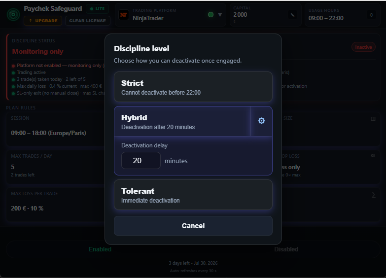
Fonctionnalités
Horaires de trading (fuseau, ex. Europe/Paris).
Nombre max d’ouvertures par jour / session.
Taille max de contrat / lot.
Attente après trade / après perte.
Risque max par trade (€ et %).
Perte journalière max (€ et %).
Zone prix sur chart ; hors zone = block.
SL-only, quotas de modif, breakeven.
Capital de référence + plage d’usage logiciel.
Règle · Session
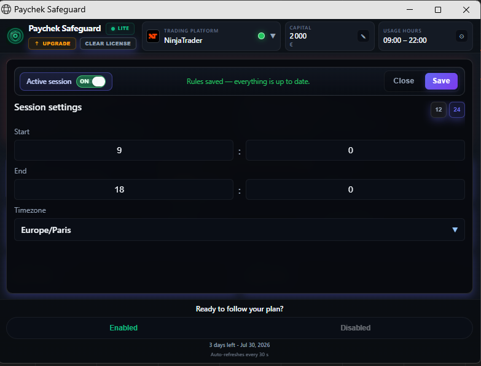
Règle · Max trades
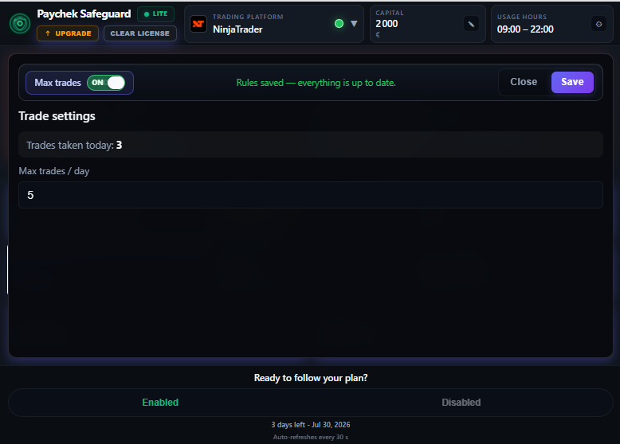
Règle · Max lot
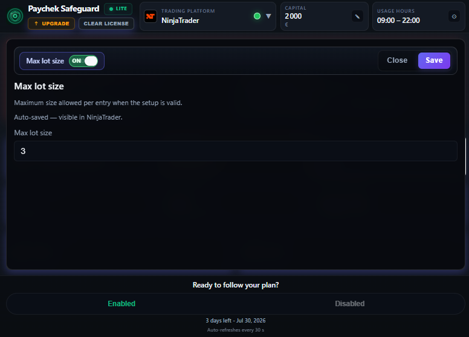
Règle · Trade cooldown
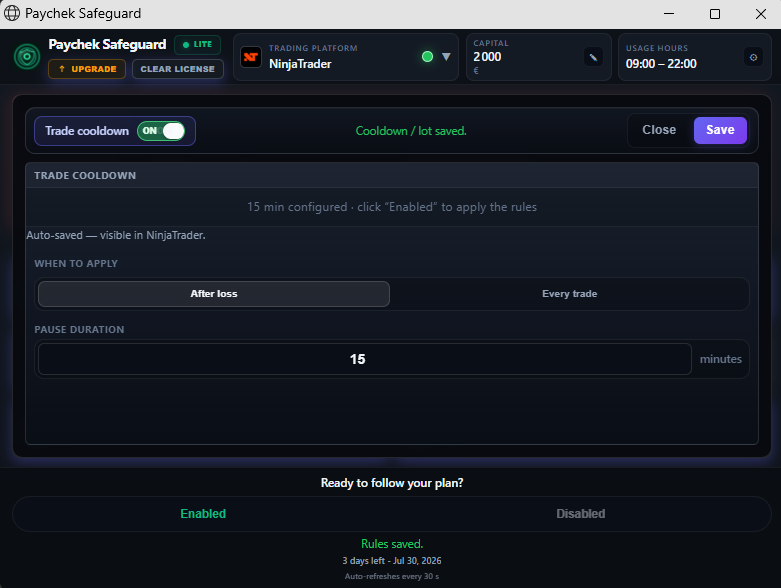
Règle · Max loss / trade
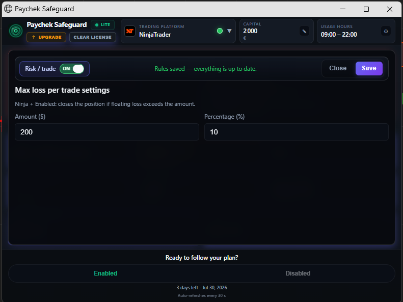
Règle · Max daily loss
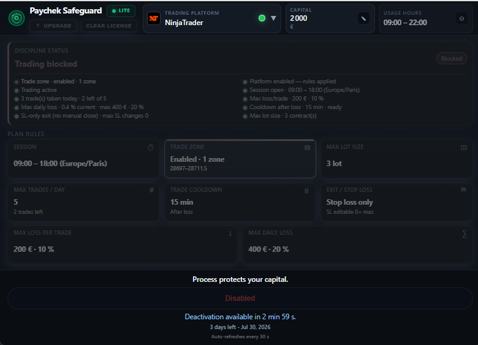
Règle · Trade zone
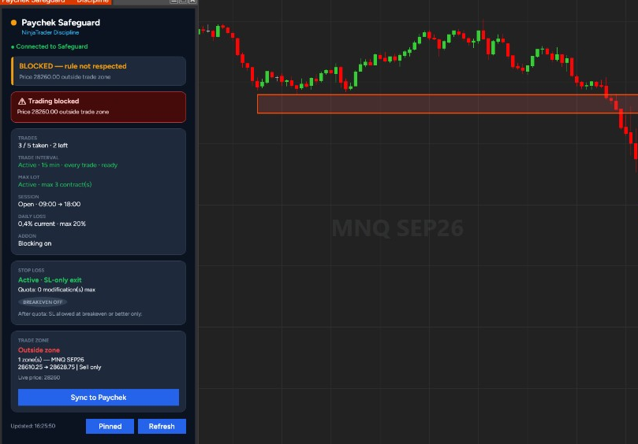
Règle · Exit / Stop loss
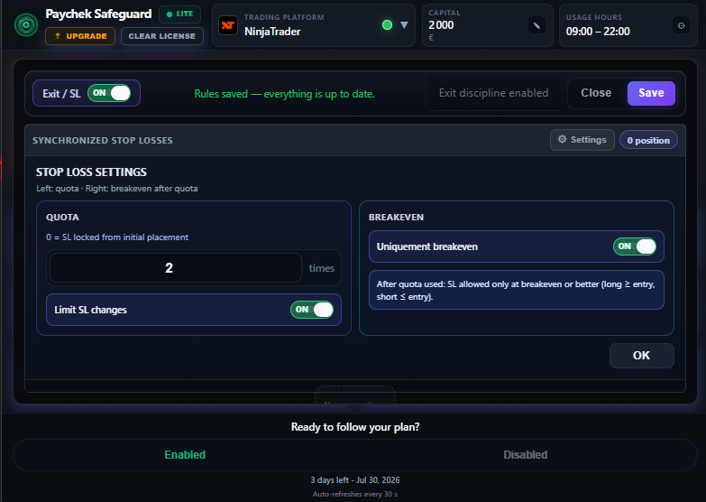
Réglages globaux
Montant de référence (ex. 2000 €) pour calculer les % de risque / daily loss.
Plage d’utilisation du logiciel (ex. 09:00–22:00), distincte de la session de trading.
Sélecteur NinjaTrader + indicateur Connected / Disconnected.
UI rafraîchit le statut périodiquement (ex. toutes les 30 s).
Licence
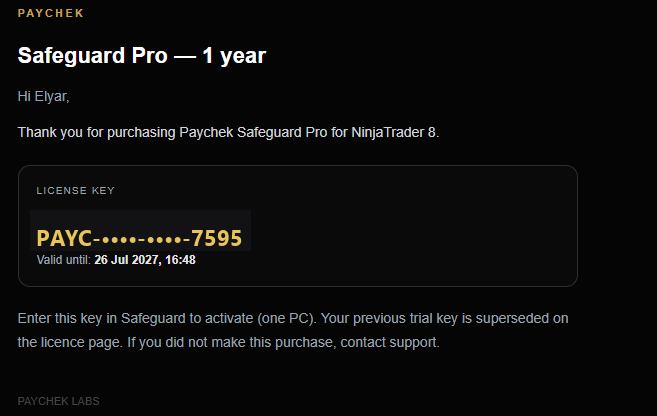
Usage
3-Open-Safeguard.bat — vérifier Connected + licence.
Session, quotas, zone, SL, capital — puis Engage discipline.
Fenêtre Paychek Safeguard — Connected / OK — trader.
Optionnel : Pause. Arrêt serveur : _technique\STOP.bat.
Prérequis
Avertissements
Téléchargement, licence et support — Paychek Safeguard pour NinjaTrader.
Production
Retirer cette slide du PDF final.